Balduíno IV — Poster Editorial
Experiência editorial inspirada em pôsteres históricos, com tipografia monumental e atmosfera dramática.
Ver projeto →Transformo ideias em produtos digitais com foco em estética, performance e conversão.
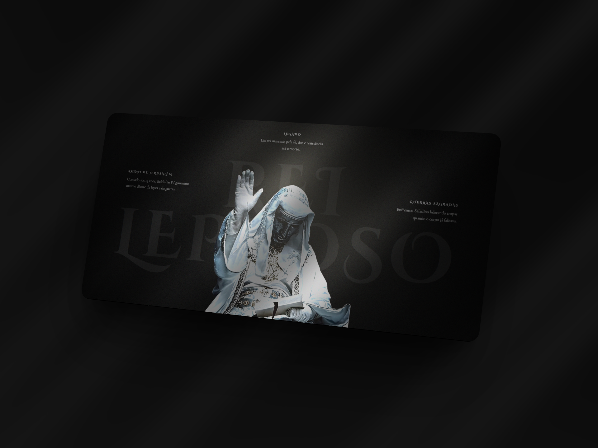
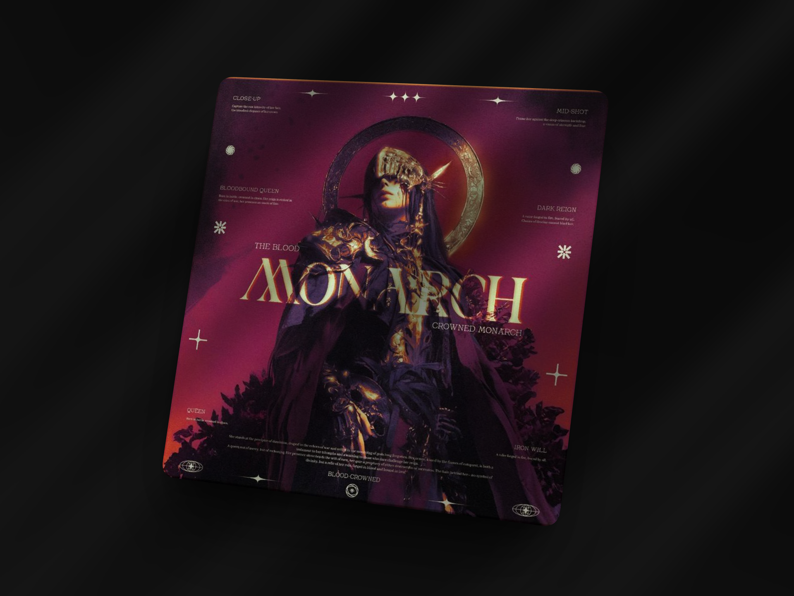
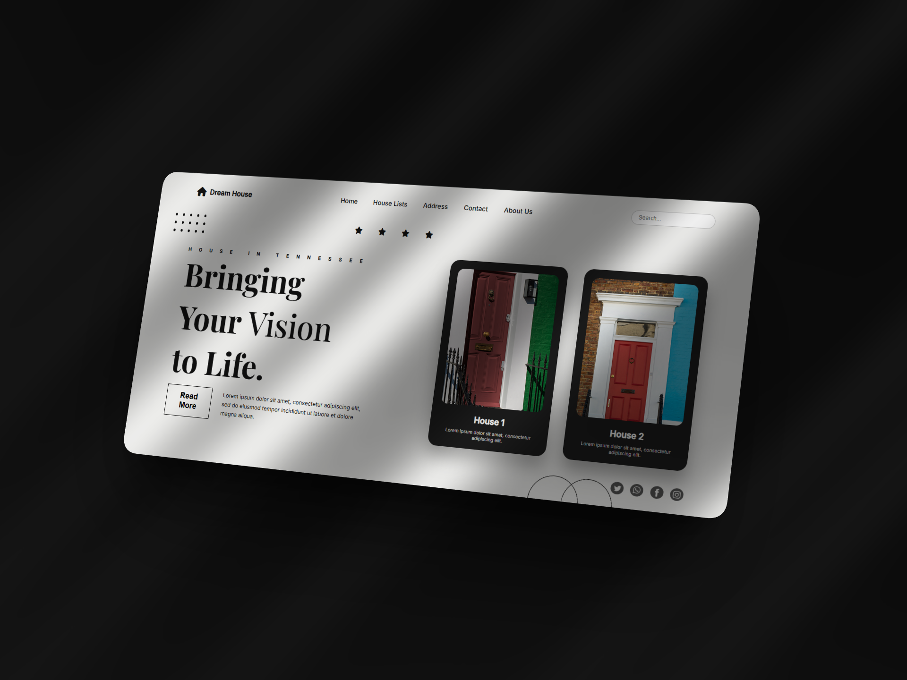
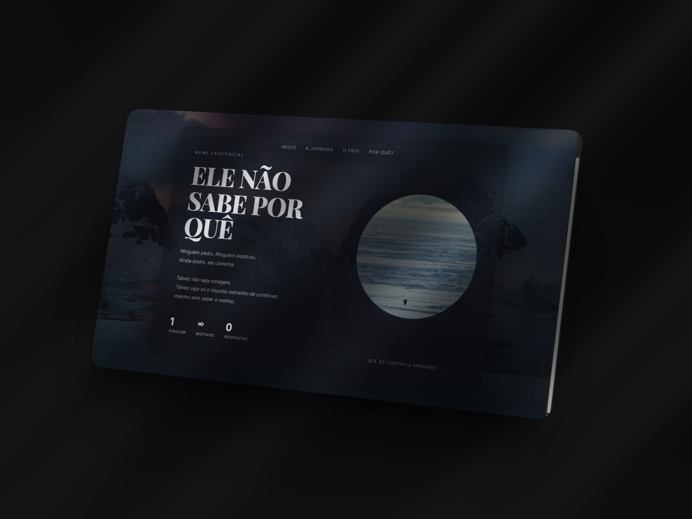
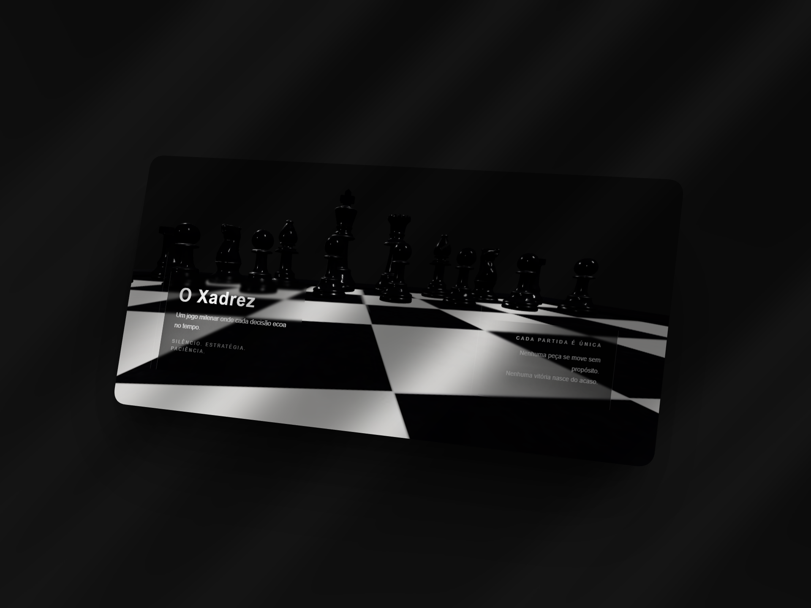
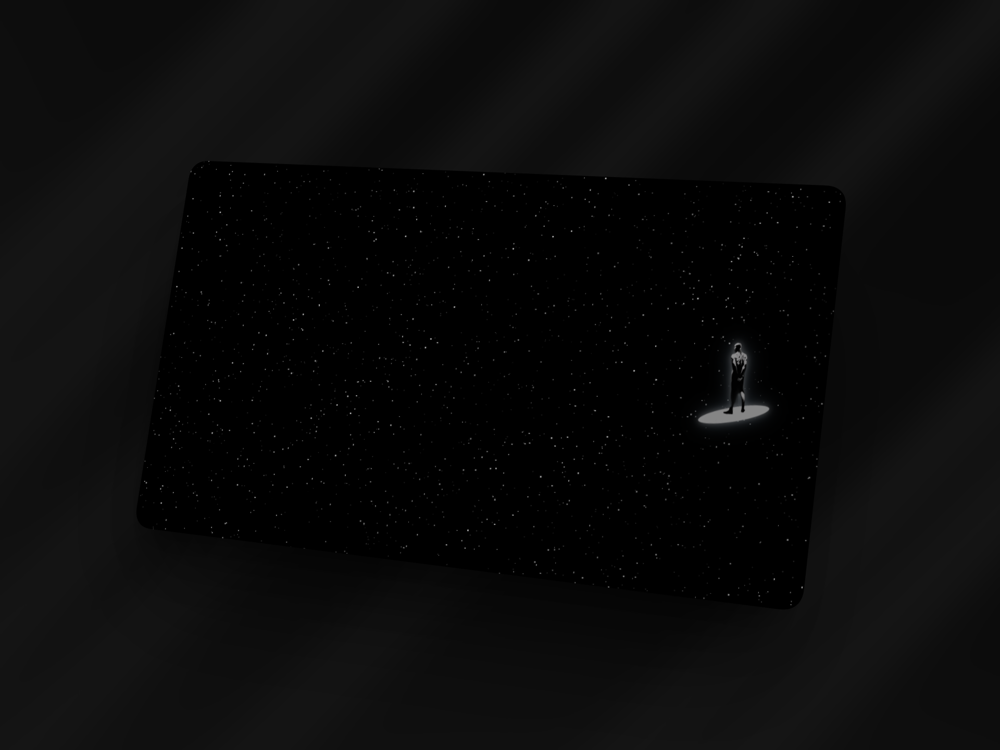
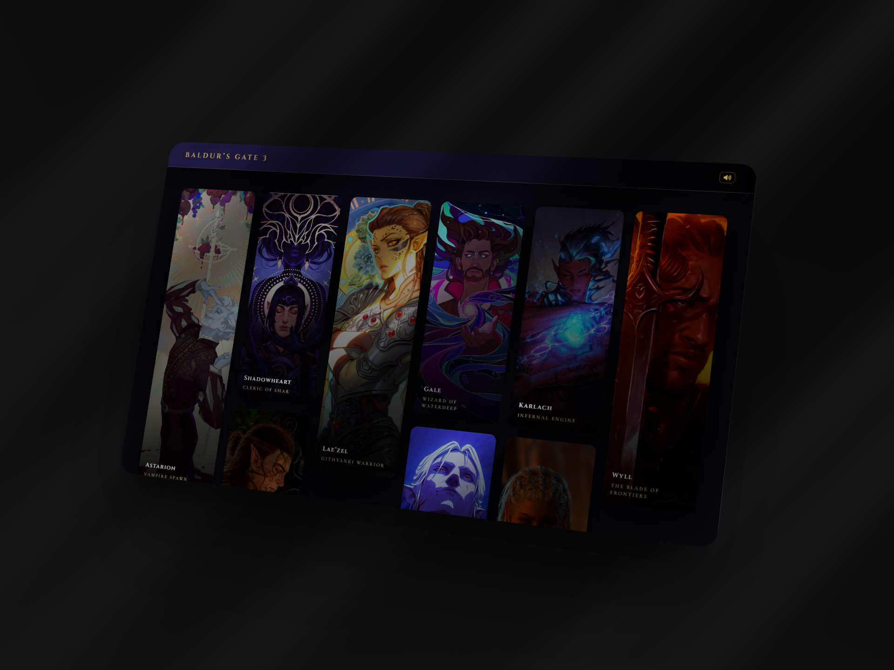
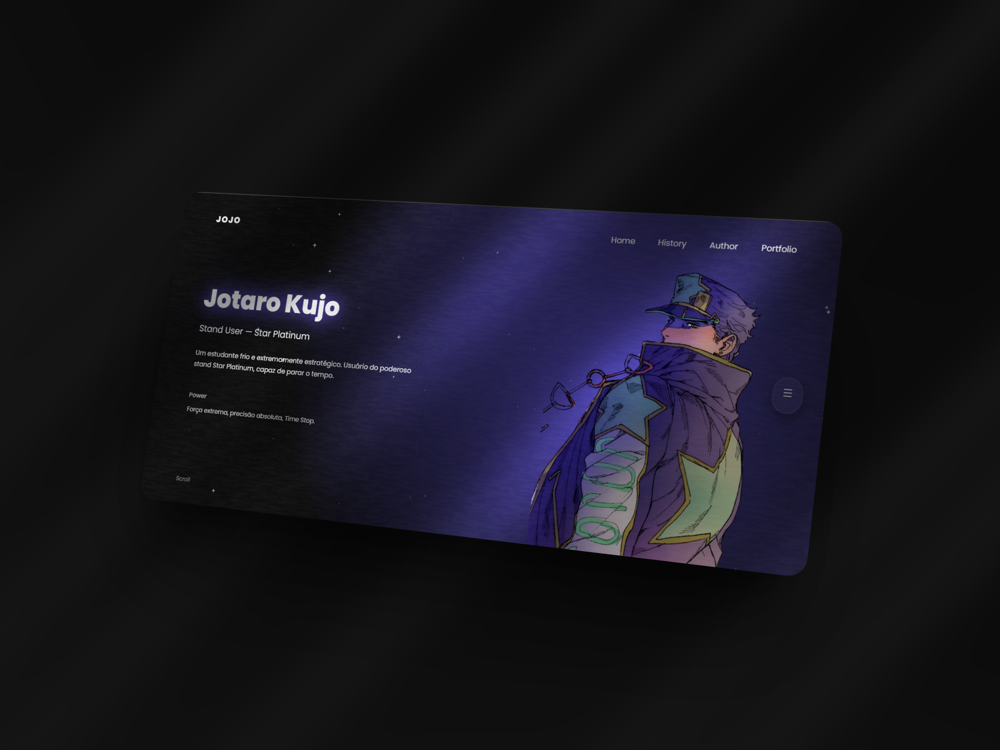
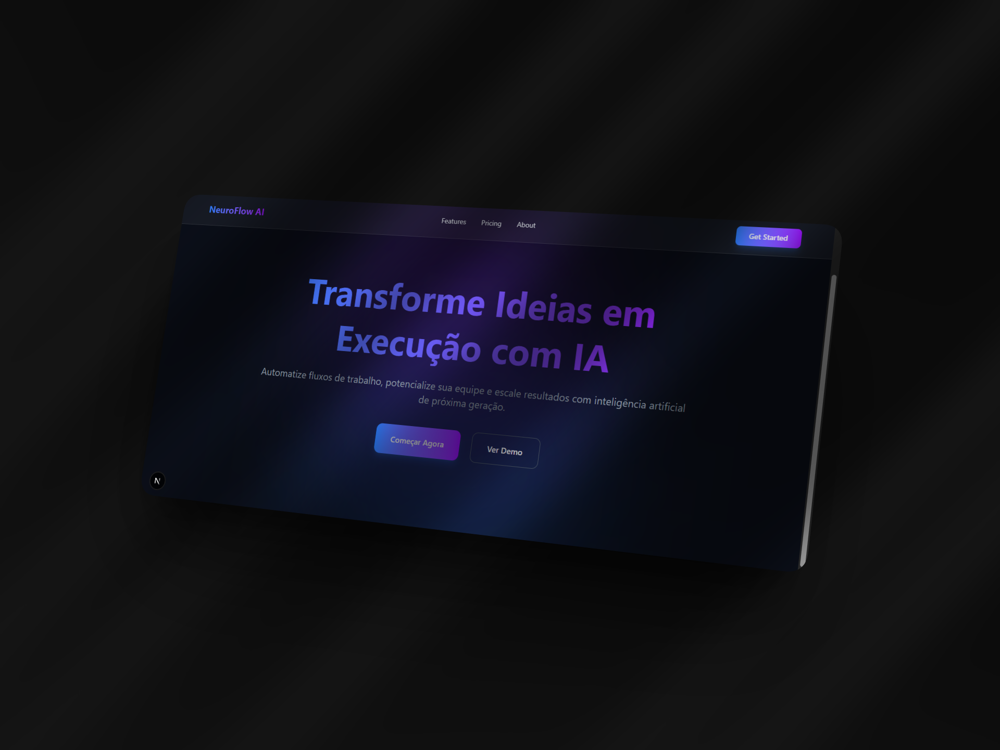

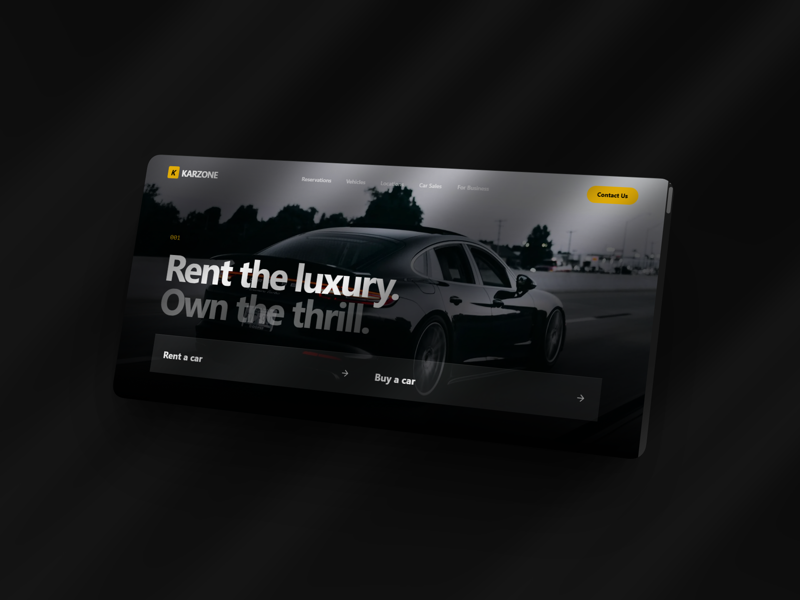
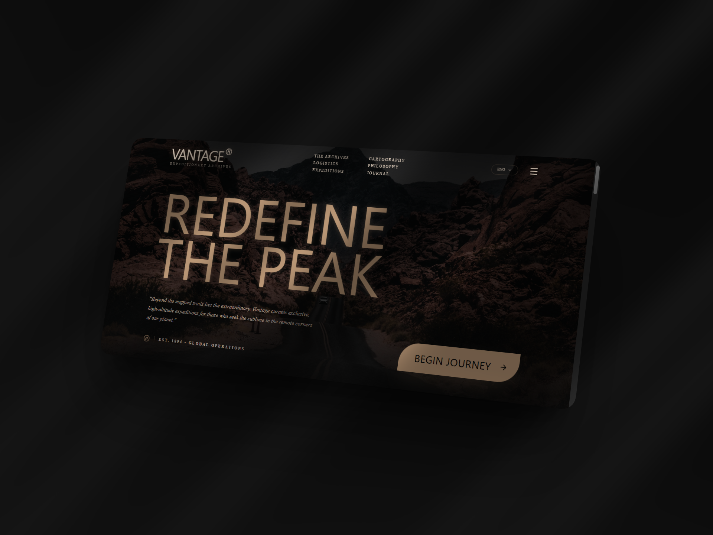
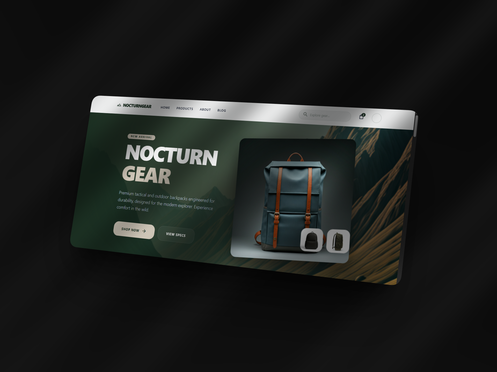
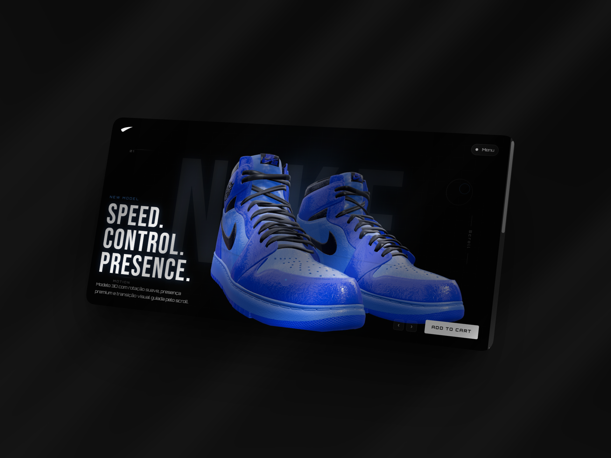
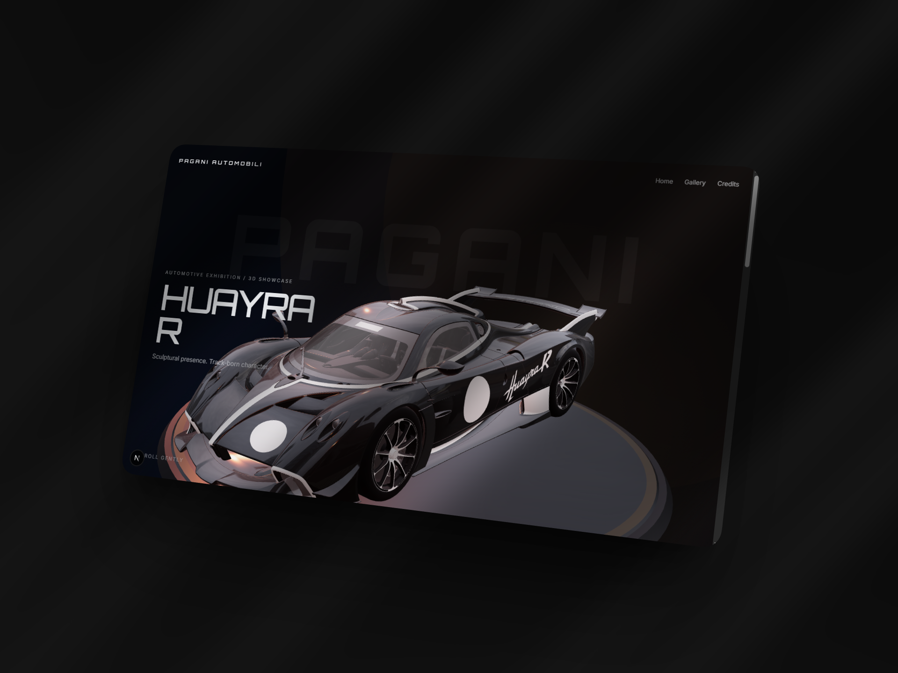

Para uma experiência completa, visualize este site em um computador.
Trabalhos que unem direção visual, código limpo e narrativa.
Experiência editorial inspirada em pôsteres históricos, com tipografia monumental e atmosfera dramática.
Ver projeto →Projeto dark-fantasy com estética cinematográfica, efeitos sutis e narrativa visual intensa.
Ver projeto →Landing page imobiliária com abordagem editorial, tipografia refinada e elementos decorativos sutis inspirados em layouts cinematográficos.
Ver projeto →Experimento visual e narrativo inspirado em um meme existencial. Um pinguim caminha em direção à montanha sem saber o motivo — apenas continua.
Ver projeto →Experimento visual em WebGL inspirado na estética e na filosofia do xadrez. Um tabuleiro 3D apresentado de forma contemplativa, onde luz, câmera e silêncio reforçam a ideia de que cada movimento carrega intenção.
Ver projeto →O projeto utiliza JavaScript imperativo para geração dinâmica das estrelas, enquanto o React atua apenas como camada estrutural, priorizando performance, clareza arquitetural e fluidez visual.
Ver projeto →Uma experiência visual imersiva inspirada na atmosfera sombria de Baldur’s Gate 3. O projeto combina HTML semântico, CSS cinematográfico e JavaScript orientado a dados para criar um painel interativo estilo RPG. Cada personagem possui história e características estruturadas em variáveis JavaScript, permitindo transições suaves, enquadramento dinâmico de imagem (object-position) e animações com estética de grimório arcano.
Ver projeto →Uma experiência visual inspirada na estética dramática e estilizada de JoJo’s Bizarre Adventure. O projeto combina HTML semântico, CSS com composição cinematográfica e JavaScript orientado a estados para criar uma navegação imersiva entre protagonistas da obra. Cada personagem é estruturado através de dados dinâmicos, permitindo transições suaves, enquadramento estratégico de imagem (object-position) e mudanças de atmosfera conforme a Parte selecionada. O layout foi desenvolvido com foco em impacto visual: tipografia marcante, contraste forte, sobreposições controladas e responsividade otimizada para preservar a experiência tanto no desktop quanto no mobile. A navegação funciona como um slider narrativo, onde cada clique altera contexto, identidade visual e hierarquia de informação de forma fluida.
Ver projeto →Projeto desenvolvido como parte do meu início de aprendizado em Next.js, com foco na construção de uma landing page moderna para um produto SaaS de automação com inteligência artificial. A aplicação utiliza o App Router do Next.js para organização estrutural, Tailwind CSS v4 para estilização utilitária de alta performance e Framer Motion para criar animações suaves e envolventes. A arquitetura foi pensada para escalar, priorizando separação de componentes, clareza estrutural e base sólida para futuras integrações como autenticação, dashboard e APIs.
Ver projeto →
Projeto desenvolvido com foco em interface imobiliária de alto padrão, explorando visualização de dados, microinterações e layout imersivo. A aplicação foi construída com React + TypeScript, utilizando Tailwind CSS para estilização moderna e sistema de glassmorphism. As animações são controladas com Motion (motion/react), garantindo transições suaves e entradas progressivas dos componentes. Para visualização analítica, integrei gráficos dinâmicos com Recharts, criando um dashboard responsivo que combina estética minimalista com experiência interativa. A arquitetura prioriza componentização, responsividade mobile-first e organização escalável para futura integração com APIs e dados reais.
Ver projeto →Projeto desenvolvido com foco em criar uma experiência digital imersiva inspirada no universo automotivo de alto padrão. A interface explora estética minimalista, contrastes marcantes e storytelling visual para transmitir exclusividade, performance e sofisticação. A aplicação foi construída com Next.js + React e TypeScript, utilizando Tailwind CSS para estilização moderna e responsiva. O projeto explora animações suaves e interações baseadas em scroll utilizando Motion, criando transições fluidas entre seções e elementos que respondem ao movimento do usuário. Um destaque da interface é a seção interativa de showcase de veículos, onde imagens deslizam horizontalmente conforme o usuário navega verticalmente pela página, criando uma experiência cinematográfica. A arquitetura prioriza componentização, organização escalável e design mobile-first, garantindo performance elevada e base preparada para futura integração com APIs, catálogos de veículos e sistemas de reserva.
Ver projeto →Projeto desenvolvido com foco em criar uma experiência digital imersiva inspirada no universo das grandes expedições de montanha e nos arquivos clássicos de exploração geográfica. A interface explora uma estética vintage contemporânea, combinando tipografia expressiva, imagens cinematográficas e contrastes profundos para transmitir aventura, descoberta e sofisticação. A aplicação foi construída com React e TypeScript, utilizando Tailwind CSS para estilização moderna e altamente responsiva. O projeto incorpora animações fluidas e microinterações com Motion, criando transições suaves entre seções e elementos que respondem de forma orgânica ao movimento do usuário. Um dos destaques da interface é a galeria interativa de destinos, onde os cartões de expedição se expandem dinamicamente ao hover, revelando informações detalhadas e criando uma navegação visual envolvente. A arquitetura do projeto foi pensada para priorizar componentização, organização escalável e design mobile-first, garantindo performance elevada e base preparada para futuras integrações com APIs de destinos, sistemas de reserva e plataformas de expedições.
Ver projeto →Projeto desenvolvido com foco em criar uma experiência digital imersiva para uma marca fictícia de equipamentos outdoor e táticos voltados para exploradores modernos. A interface explora uma estética robusta e sofisticada, combinando contrastes naturais, tipografia forte e imagens de alto impacto para transmitir resistência, aventura e confiabilidade. A aplicação foi construída com React e TypeScript, utilizando Tailwind CSS para estilização moderna e altamente responsiva. O projeto incorpora animações suaves e microinterações utilizando Motion, criando efeitos de reveal on scroll e transições fluidas entre seções que tornam a navegação mais dinâmica e envolvente. Entre os destaques da interface estão a vitrine de produtos em grid interativo, a seção flagship dedicada ao produto principal da marca e os cards de blog com conteúdo editorial voltado para exploração e preparação outdoor. A arquitetura do projeto prioriza componentização, organização escalável e design mobile-first, garantindo performance elevada e uma base sólida para futuras integrações com APIs de e-commerce, sistemas de carrinho, autenticação de usuários e plataformas de conteúdo.
Ver projeto →Projeto desenvolvido com foco em criar uma experiência digital imersiva inspirada nas páginas de produto premium utilizadas por grandes marcas esportivas. A proposta foi explorar a integração entre design, interatividade e visualização 3D para transformar um produto em protagonista absoluto da interface. A página apresenta um modelo 3D de tênis renderizado diretamente no navegador, com rotação dinâmica e animações guiadas pelo scroll que criam uma sensação de movimento, profundidade e presença visual. A interface adota uma estética moderna e minimalista, com fundo escuro, iluminação azul e tipografia impactante para reforçar a atmosfera tecnológica e esportiva da experiência. O projeto foi construído com React e TypeScript, utilizando React Three Fiber para renderização 3D baseada em Three.js e Tailwind CSS para estilização responsiva e organizada. As interações e microanimações são controladas com GSAP e Framer Motion, permitindo transições suaves, efeitos cinematográficos e sincronização de movimento com o scroll da página. Entre os destaques da interface estão o texto tipográfico gigante translúcido no fundo, detalhes sutis de UI inspirados em interfaces futuristas e iluminação dinâmica que valoriza o modelo tridimensional. A arquitetura do projeto prioriza componentização, separação clara entre camada de UI e renderização 3D e uma base escalável que pode ser expandida para experiências mais avançadas como catálogos interativos, páginas de produto para e-commerce ou campanhas digitais focadas em storytelling visual.
Ver projeto →Projeto desenvolvido com foco em criar uma experiência digital cinematográfica inspirada em eventos e exposições automotivas de alto padrão, onde veículos exclusivos são apresentados como verdadeiras peças de arte. A proposta da aplicação foi reproduzir digitalmente a sensação de entrar em um estande premium e encontrar um hypercar em destaque no centro do ambiente, iluminado e apresentado como objeto de apreciação. A experiência coloca um modelo 3D do Pagani Huayra R no centro da cena, girando suavemente como em um showroom, enquanto o usuário explora o site. A aplicação foi construída com Next.js e React, utilizando React Three Fiber e Three.js para renderização 3D em tempo real no navegador. A interface explora iluminação cinematográfica, reflexos realistas e composição minimalista para destacar a escultura automotiva do veículo. O projeto também incorpora animações guiadas por scroll utilizando GSAP e ScrollTrigger, criando mudanças sutis de iluminação e atmosfera conforme o usuário navega pela página. Elementos visuais como halo de luz, plataforma de exposição e ambientação HDRI foram utilizados para reforçar a sensação de um estande automotivo premium. A arquitetura prioriza componentização, organização escalável e performance otimizada para WebGL, criando uma base sólida para futuras expansões como hotspots interativos, exploração técnica do veículo ou experiências imersivas mais avançadas.
Ver projeto →
Projeto desenvolvido com o objetivo de explorar uma abordagem
visual mais ousada para interfaces de e-commerce e landing pages
de moda urbana. A proposta do Neo-Street foi criar uma
experiência digital inspirada no universo do streetwear
contemporâneo, combinando referências de cultura urbana,
estética techwear, glitch digital e elementos visuais inspirados
em sinalizações industriais e sistemas urbanos.
Em vez de seguir o padrão tradicional de lojas online
minimalistas e neutras, o projeto busca transmitir atitude e
identidade visual forte, criando uma interface que se comporta
quase como um sistema urbano digital. O layout foi estruturado
utilizando grids marcantes, contrastes agressivos, tipografia
pesada e elementos gráficos inspirados em mapas urbanos,
scanners e painéis de controle.
A experiência visual incorpora efeitos como glitch bars,
scanlines, ruído fotográfico e camadas gráficas que reforçam a
sensação de ambiente digital ativo. O design também utiliza
cartões visuais robustos, sombras duras e elementos com
aparência industrial para criar uma estética editorial que
mistura design de moda, interface digital e identidade de marca.
A aplicação foi construída com React e TypeScript, utilizando
Tailwind CSS para estilização altamente modular e responsiva. O
projeto explora componentização extensiva para facilitar a
reutilização de elementos como cards, seções editoriais, grids
de produtos e blocos de informação.
A estrutura da página inclui diferentes áreas que ajudam a
construir um universo visual mais completo da marca, como seções
de categorias, new arrivals, collections, studio, archive e
journal, aproximando a interface de um editorial digital em vez
de uma simples vitrine de produtos.
O resultado é uma experiência que mistura e-commerce, direção de
arte e design experimental, explorando uma estética futurista
urbana voltada para marcas de moda que buscam transmitir
personalidade forte e identidade visual marcante no ambiente
digital.
Sou web designer e desenvolvedor full stack focado em criar interfaces sofisticadas, funcionais e alinhadas a objetivos reais. Trabalho de forma code-first, unindo design e engenharia desde a primeira linha.